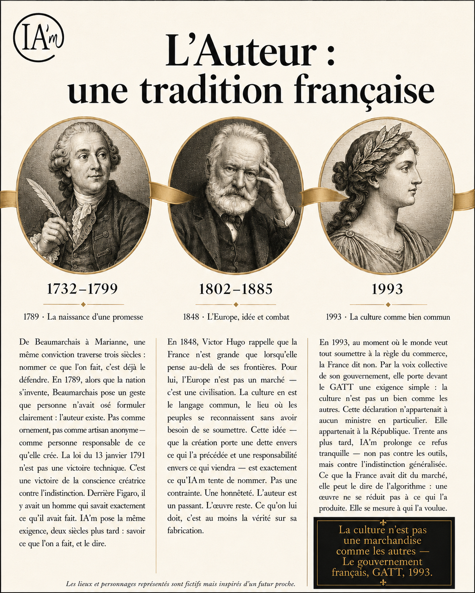

Numéro Spécial 02 · IA'm Magazine
l'héritage en numérique
Nul besoin d'un grand soir. IA'm ne s'est pas imposé par décret. Il s'est installé comme s'installent les évidences : doucement, puis d'un coup, partout à la fois. Ce numéro spécial revient sur ce que nous devions à Beaumarchais, à Hugo, à la République — et sur ce que la France a su nommer là où l'Europe cherchait encore ses mots.
Page 2 · Histoire & héritage

De Beaumarchais à Marianne, une même conviction traverse trois siècles : nommer ce que l'on fait, c'est déjà le défendre.
1791. Beaumarchais arrache à l'Assemblée constituante la reconnaissance du droit d'auteur — l'idée, neuve alors, qu'une œuvre appartient d'abord à celui qui l'a portée. 1838, la Société des auteurs prolonge ce geste en institution. 1993, lors des négociations du GATT, la voix de la France impose au monde l'exception culturelle : la création n'est pas une marchandise comme une autre, et ne peut être soldée au nom du seul libre-échange.
Trois moments, une seule ligne de conduite. Quand la technique change la donne — l'imprimerie, le disque, la diffusion de masse — la France a toujours choisi de nommer la place de l'auteur plutôt que de la laisser se dissoudre dans l'outil. IA'm ne fait rien d'autre. Il ne juge pas l'usage de l'intelligence artificielle : il demande seulement qu'on dise qui, de la main ou de la machine, a porté la décision créative. Une question vieille de plus de deux siècles, posée à un outil qui ne l'est pas.
« Ce que nous devions à Beaumarchais, nous le devons aujourd'hui à quiconque crée avec une machine : le droit d'être nommé. »
— Voix d'État, intervention devant le Parlement européen
Page 3 · Évidence
On l'attendait. Il est désormais évident.
La lycéenne. « On ne nous a jamais demandé de cacher qu'on utilisait une calculatrice. Pourquoi on l'aurait fait pour l'IA ? »
La responsable RH. « Avant, on devinait. Maintenant, le candidat le dit lui-même, sur son book. Ça change tout, pour lui comme pour nous. »
Le professeur de lettres. « Ils n'attendaient pas qu'on leur interdise l'IA. Ils attendaient juste qu'on leur propose l'outil pour en parler honnêtement. »
L'artiste plasticienne. « Je n'ai rien changé à ma manière de créer. J'ai juste arrêté de m'excuser pour ce que je faisais déjà. »
La bibliothécaire. « Les lecteurs nous demandaient si le livre avait été écrit "par une IA". Maintenant, on n'a plus besoin de deviner : c'est écrit en toutes lettres, sur la couverture. »